Introdução à unidade
Nesta unidade, são estudados os triângulos e os quadriláteros, relembrando inicialmente a soma das medidas dos ângulos internos de um triângulo, apresentando a relação existente entre a medida de um ângulo externo e as medidas entre dois ângulos internos não adjacentes a ele. São exploradas as construções com régua e compasso das bissetrizes dos ângulos internos de um triângulo, das suas medianas e das suas alturas. Também são estudados os pontos notáveis do triângulo: incentro, ortocentro, baricentro e circuncentro. Por fim, são abordados os casos de congruência de triângulos. Para essas construções, os alunos irão necessitar de instrumentos como régua e compasso.
No estudo dos quadriláteros, são exploradas as propriedades dos paralelogramos e trapézios.
A seguir, relacionamos os objetivos que se pretende atingir ao estudar os conceitos desta unidade.
Capítulo 1 – Triângulos
Objetivos:
- Reconhecer a condição de existência de um triângulo.
- Perceber que, dependendo das medidas dos segmentos, não é possível construir um triângulo.
- Identificar e nomear adequadamente os elementos dos triângulos.
- Perceber que a soma das medidas dos ângulos internos de um triângulo é sempre a mesma, independente da sua classificação.
- Resolver situações-problema que envolvam a soma das medidas dos ângulos internos de um triângulo.
- Compreender a relação entre as medidas dos ângulos internos e externos de um triângulo.
- Construir as bissetrizes, alturas e medianas de um triângulo usando régua e compasso.
- Reconhecer os pontos notáveis de um triângulo (incentro, ortocentro, baricentro e circuncentro).
- Reconhecer quando dois triângulos são congruentes usando os casos de congruência LLL, LAL, ALA e LAAo.
Capítulo 2 – Quadriláteros
Objetivos:
- Identificar e nomear adequadamente os elementos de um quadrilátero.
- Classificar os quadriláteros em paralelogramos e trapézios.
- Identificar os paralelogramos (retângulo, losango e quadrado).
- Identificar os trapézios (retângulo, isósceles e escaleno).
- Compreender a relação entre as medidas dos ângulos internos de um quadrilátero.
- Resolver situações-problema a partir da aplicação das propriedades dos paralelogramos e trapézios.
Probabilidade e estatística – Tabela de frequências
Objetivos:
- Diferenciar frequência absoluta de frequência relativa.
- Representar a frequência absoluta e relativa em tabelas.
Orientações específicas
Na abertura da unidade, é explorada a ideia da presença da geometria na decoração. É muito comum, hoje em dia, as pessoas escolherem formas geométricas para ajudar na decoração de ambientes. Promova uma discussão sobre o tema em sala de aula e, se achar interessante, solicite aos alunos que pesquisem em sites ou revistas outras situações em que formas geométricas foram utilizadas para decorar um ambiente. Neste caso, escolhemos explorar as características dos triângulos e dos quadriláteros. Estes polígonos já foram estudados em anos anteriores, porém agora serão apresentados novos conceitos relacionados a essas formas geométricas.


|
Principais habilidades da BNCC |
EF07MA24, EF08MA15, EF08MA17 |
|
Competências |
CE3, CE6, CE8, CG3, CG4, CG6, CG9 |
Iniciamos esta unidade mostrando como a arte pode ser influenciada pela geometria. De acordo com Fainguelernt (2006, p. 18):
A Matemática e a Arte nunca estiveram em campos antagônicos, pois desde sempre caminharam juntas, aliando razão e sensibilidade. Na verdade, podemos observar a influência mútua de uma sobre a outra desde os primeiros registros históricos que temos de ambas. Essas duas áreas sempre estiveram intimamente ligadas, desde as civilizações mais antigas, e são inúmeros os exemplos de sua interação. Muitos povos utilizaram elementos matemáticos na confecção de suas obras: os egípcios com suas monumentais pirâmides e gigantescas estátuas; os gregos com o famoso Parthernon e com seus belíssimos mosaicos; os romanos com suas inúmeras construções com formas circulares, entre elas o Coliseu.
Um exemplo de artista que teve a sua obra influenciada pela geometria é Anni Albers. Essa artista alemã e seu marido, Josef Albers, também artista de grande renome, apaixonaram-se pela história e arte popular latina. Entre 1934 e 1967, em viagens pelo Peru, Chile, Cuba e, especialmente, México, visitaram sítios arqueológicos e conheceram os costumes e a arquitetura desses lugares que serviram de inspiração para os seus trabalhos.
Para um aprofundamento sobre o trabalho desses artistas, sugerimos a leitura do livro Anni e Josef Albers – Viagens pela América Latina, publicado pelo Museu Oscar Niemeyer, em 2008. Por meio desse livro, é possível conhecer um pouco sobre a vida desses artistas e algumas de suas obras.
Caso você queira, é possível explorar outros artistas que também utilizaram a geometria como fonte de inspiração de suas obras. Pode-se citar Mondrian, Escher, Kandinsky, Romero Britto, Sacilotto, entre outros. Pode-se organizar os alunos em grupos e solicitar que cada grupo faça uma pesquisa sobre um determinado artista e que apresentem uma obra, expondo o significado dela. Para um aprofundamento sobre o significado das obras e artistas apresentados nesta coleção, é possível realizar um trabalho em conjunto com a disciplina de Arte.
Outros trabalhos podem ser solicitados. Recomendamos a leitura e trabalho com os livros:
- FAINGUELERNT, Estela Kaufmann; NUNES, Katia Regina Ashton. Fazendo arte com a Matemática. Porto Alegre: Artmed, 2006.
- ______. Tecendo Matemática com arte. Porto Alegre: Artmed, 2009.
No início do capítulo, a partir da observação de uma obra de Anni, é solicitado aos alunos que representem a forma geométrica predominante no caderno e identifiquem os seus elementos. Lembramos que os elementos e a classificação dos triângulos já foram estudados em anos anteriores. Neste momento, é feita uma retomada, para então aprofundarmos o estudo sobre essas formas geométricas.
O triângulo é um polígono de três lados. Veja a representação de um triângulo e seus elementos.
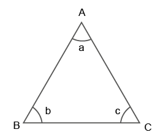
- ,
 e são os lados do triângulo;
e são os lados do triângulo; - A, B e C são os vértices;
- a, b e c são os ângulos internos.
Indicamos o triângulo ABC por ΔABC.
Em um triângulo, a bissetriz interna, a altura e a mediana são consideradas as cevianas mais importantes. Ceviana é todo segmento de reta que tem uma extremidade em um vértice qualquer de um triângulo e a outra no lado oposto, ou no prolongamento desse lado.
No estudo das alturas de triângulos acuntângulo, retângulo ou obtusângulo, proponha aos alunos que encontrem os respectivos ortocentros.
Triângulo acutângulo

Triângulo retângulo

Triângulo obtusângulo
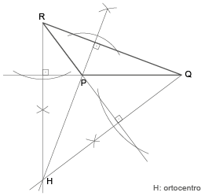
Questione os alunos sobre as diferenças encontradas em cada um dos casos. Eles devem perceber que o ortocentro de um triângulo pode ser interno, externo ou pode coincidir com um dos vértices.
Em qualquer triângulo, as três medianas concorrem no mesmo ponto, chamado de baricentro, que divide cada uma delas em dois segmentos. A medida do segmento que une um dos vértices do triângulo ao baricentro é igual ao dobro da medida do segmento que une o baricentro ao lado oposto desse vértice.
O baricentro é o centro de gravidade de um triângulo. Isso quer dizer que, se um triângulo construído com um material homogêneo for suspendido pelo baricentro, esse triângulo estará em equilíbrio.


Atividade 3
Em qualquer triângulo, a medida do lado deve ser menor que a soma das medidas dos outros dois lados. Então, se a, b e c são medidas dos lados de um triângulo qualquer, temos: a < b + c, b < a + c e c < a + b.
Classificação dos triângulos quanto à medida dos ângulos
|
Triângulo acutângulo |
Triângulo retângulo |
Triângulo obtusângulo |
|
Possui três ângulos internos agudos. |
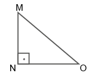 Possui um ângulo reto, ou seja, que mede 90º. |
Possui um ângulo obtuso. |


Classificação dos triângulos quanto à medida dos lados
|
Triângulo equilátero |
Triângulo isósceles |
Triângulo escaleno |
|
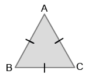 Possui três lados congruentes. |
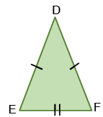 Possui pelo menos dois lados |
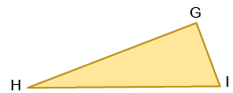 Possui os três lados com |
Encontre soluções
Atividade 2
- Não representam as medidas dos lados de um triângulo, pois 10 > 4 + 5.
- Representam as medidas dos lados de um triângulo, pois 5 < 11 + 8, 11 < 5 + 8 e 8 < 11 + 5.
- Não representam as medidas dos lados de um triângulo, pois 13 > 7 + 4.
- Representam as medidas dos lados de um triângulo, pois 8 < 9 + 10, 9 < 8 + 10 e 10 < 8 + 9.
Atividade 3
- 102º + x + x = 180º
2x = 180º - 102º
2x = 78º
x = 39º
- 37º + x + 90º = 180º
x = 180º - 37º - 90º
x = 53º
- 3x + x + x + 5º = 180º
5x = 180º - 5º
5x = 175º
x = 35º
Atividade 4
- x + 72º = 180º
x = 180º - 72º
x = 108º
- x = 90º + 40º
x = 130º
- 105º = x + 75º
x = 105º - 75º
x = 30º
- 66º = x + x
2x = 66º
x = 33º
Atividade 5
3x + x = 180º
4x = 180º
x = 45º
O ângulo interno mede 45º e o externo, 135º.
Atividade 6

x + x + x + 39º = 180º
3x = 180º - 39º
3x = 141º
x = 47º
Atividade 7

Como os segmentos  e
e  apontam para o norte, eles são paralelos, e é transversal a e a . Dessa forma, temos que DBA = FAB = 18º.
apontam para o norte, eles são paralelos, e é transversal a e a . Dessa forma, temos que DBA = FAB = 18º.
Então ABC = 180º - 44º - 18º = 118º. Como AB = BC, o triângulo ABC é isósceles.
Assim, os ângulos ACB e CAB são iguais e medem 31º. Logo, temos que FAC = BAC - BAF = 31º - 18º = 13º.


Bissetrizes e incentro
Relembre os alunos da construção de triângulos utilizando a régua e compasso. Nesta página, veremos a construção das bissetrizes de triângulos para então determinar o incentro. A bissetriz é a reta que parte do vértice de um ângulo, dividindo este ângulo em dois ângulos iguais. Ao traçarmos as três bissetrizes de um triângulo, elas vão se intersectar em um único ponto, sendo este ponto denominado incentro. Essa construção também pode ser feita por meio de softwares de geometria dinâmica.


Encontre soluções
Atividade 1
Atividade 2


Atividade 3
- 40º + 90º + x = 180º
x = 180º - 130º
x = 50º
b) ΔDFG
60º + 30º + y = 180º
y = 180º - 90º
y = 90º
ΔDEG
60º + 90º + x = 180º
x = 180º - 150º
x = 30º
c) ΔBCD
y + y + 110º = 180º
2y = 180º - 110º
y = 35º
ΔABC
70º + 70º + x = 180º
x = 180º - 140º
x = 40º
Atividade 4
ΔACP
30º + 45º + x = 180º
x = 180º - 75º
x = 105º
ΔBCP
30º + 135º + z = 180º
z = 180º - 165º
z = 15º
y = 180º - 15º
y = 165º
y - x = 165º - 105º
y - x = 60º
Atividade 5
ΔDEF
48º + 66º + x = 180º
x = 180º - 114º
x = 66º
EGF = 180º - 66º - 33º
EGF = 81º
Oriente os alunos para que esbocem os triângulos, com o objetivo de facilitar a resolução.
Atividade 6

Como o triângulo é equilátero, cada ângulo interno mede 60º.
Traçando-se a bissetriz desses ângulos, tem-se dois novos ângulos medindo 30º.
O ângulo formado pelas bissetrizes será igual a 180º - 30º - 30º =
= 120º.
Atividade 7

 = 180º - 60º - 40º
 = 80º
x = 180º - 20º - 40º
x = 120º
Atividade 8
Como o triângulo é isósceles, ele possui os ângulos da base congruentes. Logo, eles medem 64º cada um. O terceiro ângulo mede 180º - 64º - 64º = 52º.
Atividade 9


Encontre soluções
Atividade 1
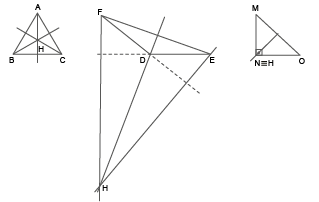
Atividade 2
 é altura.
é altura.
x = 180º - 42º - 90º = 48º
y = 180º - 64º - 90º = 26º

- é altura.
ΔAHC: m = 180º - 28º - 90º = 62º
x = 180º - 62º = 118º
y = 180º - 118º - 38º = 24º
Atividade 3

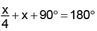
x + 4x + 360º = 720º
5x = 720º - 360º
5x = 360º
x = 72º
Os ângulos desse triângulo medem 72º, 72º e 36º.
Atividade 4
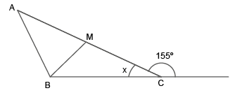
x = 180º - 155º
x = 25º
med (ABM) = 180º - 25º - 90º = 65º
Medianas e baricentro
Relembre os alunos da construção do ponto médio de um seguimento e como traçar as medianas utilizando régua e compasso. Nesta página, veremos a construção das medianas de um triângulo para então determinar o baricentro. O ponto de intersecção das três medianas chamam-se baricentro.


Encontre soluções
Atividade 1
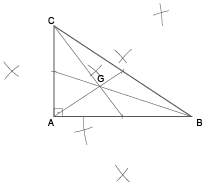

Atividade 2
- Como
 e
e  são medianas, tem-se:
são medianas, tem-se:
Perímetro: 6 + 4 + 4 + 2 + 2 =
= 18 cm.
- Como o ∆ABC é isósceles e é mediana, tem-se:
Perímetro: 7 + 7 + 3 + 3 =
= 20 cm.

Mediatrizes e circuncentro
Relembre os alunos da construção do ponto médio de um seguimento e como determinar a mediatriz utilizando a régua e compasso. Nesta página, veremos a construção da mediatriz de um triângulo para determinar o circuncentro. O ponto de intersecção das mediatrizes chama-se circuncentro.
Comente com os alunos que o circuncentro é o centro da circunferência que passa pelos três vértices do triângulo, ou seja, o circuncentro está à mesma distância dos três vértices. Além disso, o circuncentro será interno ao triângulo quando este for acutângulo; externo, se ele for obtusângulo, e coincidirá com o ponto médio da hipotenusa se o triângulo for retângulo.

Encontre soluções
Atividade 1
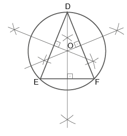
Atividade 2
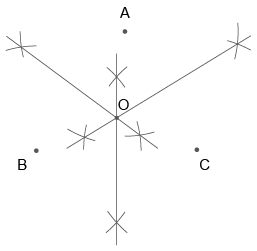
O ponto equidistante aos três vértices é o centro da circunferência circunscrita.
Atividade 3


Neste momento, retomamos a classificação de triângulos com mais formalização do que no estudo apresentado nos volumes dos anos anteriores. As classificações que abordaremos são:
- caso — LLL (teorema): se dois triângulos têm ordenadamente congruentes os três lados, então esses triângulos são congruentes.
- caso — LAL (postulado): se dois triângulos têm ordenadamente congruentes dois lados e o ângulo compreendido entre esses lados, então os triângulos são semelhantes (isto é, o lado restante e os outros dois ângulos também são ordenadamente congruentes).
- caso — ALA (teorema): se dois triângulos têm ordenadamente congruentes um lado e os dois ângulos a ele adjacentes, então esses triângulos são congruentes.
- caso — LAAo (teorema): se dois triângulos têm ordenadamente congruentes um lado, um ângulo adjacente e o ângulo posto a esse lado, então esses triângulos são congruentes.
- caso especial de congruência de triângulos retângulos (teorema): se dois triângulos retângulos têm ordenadamente congruentes um cateto e a hipotenusa, então esses triângulos são congruentes.


Atividade 4
b) Falsa. Todo triângulo isósceles possui 2 lados congruentes, isso não significa que ele será congruente a outro.
d) Falsa. Todo triângulo equilátero possui 3 lados congruentes, isso não significa que será congruente a outro triângulo.
|
Principais habilidades da BNCC |
EF08MA14, EF08MA24 |
|
Competências |
CE8, CG9 |
Por meio de uma obra de Niobe Xandó, relembramos os elementos dos quadriláteros. O estudo desta forma geométrica teve início nos anos anteriores. Neste momento, fazemos uma retomada e aprofundamos o assunto por meio da apresentação de algumas propriedades relacionadas aos paralelogramos e trapézios.
Leia a seguir algumas informações sobre a artista Niobe Xandó:
De personalidade silenciosa, avessa às tendências da moda. [...] Alguns a situam com raízes artísticas no Dadaísmo, movimento originário da Suíça, nos idos de 1916. A artista, que viveu entre Londres e Paris, criou uma arte única e lúdica. Nunca se importou se seu trabalho poderia, ou deveria, ser incluído neste ou naquele movimento. Em grande parte por influência de seu marido, Alexandre Bloch, Niobe conviveu com intelectuais de várias áreas da cultura, mas, no fundo, fez questão de se manter à parte das teorias e academicismos.
Niobe Xandó foi autodidata na sua formação e livre na sua criação. Não foi em nada previsível. Absorveu e transformou em arte tudo que estava à sua volta. Fez arte com os objetos do cotidiano. Fez pintura, desenho, colagem, objeto, frottage, escultura e reprografia. Usou os mais inusitados materiais e técnicas: bambu, crânios de macacos, dentes de animais, sementes, pintou toalhas de crochê e, bem antes da moda ecologista, materiais recicláveis.
XANDÓ, Niobe. A arte de subverter a ordem das coisas II: mostra antológica.
Curitiba: Museu Oscar Niemeyer, 2009. p. 7.
Vamos relembrar os elementos que compõem os quadriláteros.
Vejamos o quadrilátero ABCD.
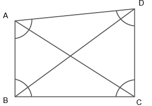
Vértices: A, B, C e D.
Lados: ,  , 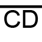 e .
, 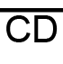 e .
Ângulos internos:
ABC, BCD, CDA e BAD.
Diagonais: e  .
.


Encontre soluções
Atividade 2
2x + x + 32º + x + 40º + x - 27º =
= 360º
5x = 360º - 45º
5x = 315º
x = 63º
Os ângulos são 126º, 95º, 103º e 36º.
Atividade 4
- x + 18º + x + 26º + 90º = 180º
2x = 180º - 134º
2x = 46º
x = 23º
- 90º - 23º - 18º = 49º
Propriedades dos paralelogramos
Neste momento, iremos apresentar algumas propriedades nos quadriláteros iniciando com os paralelogramos. As propriedades abordadas são:
- Ângulos opostos congruentes.
- Lados opostos congruentes.
- Propriedade das diagonais.
- Propriedade das diagonais do retângulo.
- Propriedade das diagonais do losango.
- Propriedades dos trapézios isósceles.

Propriedades dos trapézios isósceles
Comente com os alunos que as propriedades fundamentais do trapézio isósceles são:
- Dois ângulos adjacentes somam 180°.
- Quando os dois lados não paralelos são iguais e dois pares de ângulos adjacentes são iguais, é denominado trapézio isósceles.
- Um trapézio isósceles pode ser inscrito em um círculo.
- As diagonais de um trapézio isósceles são iguais.
- As diagonais de um trapézio isósceles formam um par de triângulos congruentes com lados iguais como base.

Encontre soluções
Atividade 1
Perímetro: 7 + 4 + 7 + 4 = 22 cm.
Atividade 3
3x - 6 = 42
3x = 48
x = 16
Atividade 5
y + 72º = 180º
y = 108º
z + 108º = 180º
z = 72º
x + x + 72º = 180º
2x = 108º
x = 54º
Atividade 6
Em um trapézio isósceles, os ângulos da base possuem a mesma medida, portanto cada ângulo mede 63º.
63º + 63º + x + x = 360º
2x = 360º - 126º
2x = 234º
x = 117º
Os ângulos medem 63º, 63º, 117º e 117º.
Atividade 7
Em um trapézio isósceles, os ângulos da base possuem a mesma medida, portanto:
2x + 14º = x + 36º
x = 36º - 14º
x = 22º
As medidas dos ângulos são 58º, 58º, 122º e 122º.
Atividade 8
Como a soma das medidas dos ângulos opostos de um paralelogramo é igual a 108º, então cada ângulo mede 54º. Como os dois outros ângulos possuem a mesma medida entre si, temos:
54º + x + 54º + x = 360º
2x = 360º - 108º
2x = 252º
x = 126º
Os ângulos deste paralelogramo medem 54º, 126º, 54º e 126º.
Atividade 9
x + x + 46º = 180º
2x = 180º - 46º
2x = 134º
x = 67º
180º - 67º = 113º
Os ângulos medem 67º, 113º, 67º e 113º.
Probabilidade e estatística – Tabela de frequências
Após a apresentação dos conceitos de frequência absoluta e relativa, você pode aproveitar para representar os dados das tabelas por meio de um gráfico de barras e um gráfico de setores utilizando o software LibreOffice (software gratuito). Veja, a seguir, dois roteiros utilizando os exemplos apresentados no livro do aluno.
Roteiro 1
Software: Planilha eletrônica - LibreOffice (software gratuito).
Assunto: Construção de gráfico de barras.
Objetivos:
- Utilizar a tecnologia como recurso de aprimoramento dos conhecimentos adquiridos em sala de aula.
- Aplicar os recursos de uma planilha eletrônica na construção do gráfico de barras para representar a frequência absoluta.
- Inserir o aluno no mundo digital, com base em um aprendizado mais duradouro e atualizado em relação aos avanços sociais e tecnológicos.
Como usar o software
- Acesse o programa LibreOffice.
- Digite a tabela da página 185 do livro do aluno na planilha.
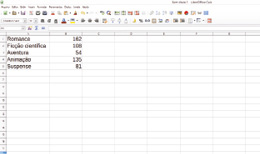
- Clique com o mouse na célula A1 e arraste até a célula B5 para selecionar toda a tabela.

- Em seguida, clique no botão
 para abrir a janela “Assistente de gráfico” e automaticamente o gráfico de barras se formará.
para abrir a janela “Assistente de gráfico” e automaticamente o gráfico de barras se formará.
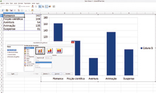
- No campo “Elementos do gráfico”, digite o título do gráfico; no campo “Eixo Y”, digite os valores que se referem ao eixo y (quantidade de alunos); desmarque a função “Exibir legenda”.

- Clique em “Concluir” para finalizar. Use o mouse para mover o gráfico e alterar seu tamanho.

Roteiro 2
Software: Planilha eletrônica - LibreOffice (software gratuito)
Assunto: Construção de gráfico de setores
Objetivos:
- Utilizar a tecnologia como recurso de aprimoramento dos conhecimentos adquiridos em sala de aula.
- Aplicar os recursos de uma planilha eletrônica na construção do gráfico de setores para representar a frequência relativa.
- Inserir o aluno no mundo digital, com base em um aprendizado mais duradouro e atualizado em relação aos avanços sociais e tecnológicos.
Como usar o software
- Acesse o programa
LibreOffice. - Digite a segunda tabela da página 185 na planilha.

- Clique com o mouse na célula A1 e arraste até a célula B5 para selecionar toda a tabela.

- Em seguida, clique no botão para abrir a janela “Assistente de gráfico” e selecione o gráfico de pizza.

- No campo “Elementos do gráfico”, digite o título do gráfico.

- Clique em “Concluir” para finalizar. Use o mouse para mover o gráfico e alterar seu tamanho.


Relembre
Atividade 1
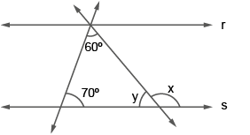
60º + 70º + y = 180º
y = 180º - 130º
y = 50º
x = 180º - 50º = 130º ou
x = 60º + 70º = 130º
Atividade 2
80º + 80º + y = 180º
y = 180º - 160º
y = 20º
60º + 80º + x + 20º = 180º
x = 180º - 160º
x = 20º
Atividade 3
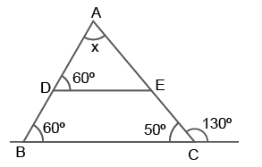
60º + 50º + x = 180º
x = 180º - 110º
x = 70º
Atividade 4

30º + y + 40º + 50º = 360º
y = 360º - 120º
y = 240º
x = 360º - 240º
x = 120º
Atividade 5
Como o trapézio é isósceles, os lados não paralelos são congruentes. Logo:
x + 22 + x + 26 = 68
2x = 68 - 48
2x = 20
x = 10 cm
Atividade 7
O terceiro lado só pode medir 12 cm, pois a medida do maior lado deve ser menor que a soma das medidas dos outros dois lados.